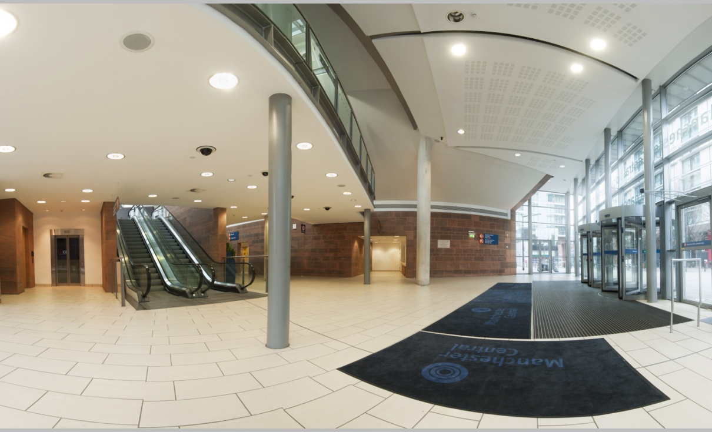

Сегодня: Числитель
Расписание
Відвідувачам
Абітурієнтам
Підготовка фахівців в області мержних та інформаційних технологій, а також застосування штучного інтелекту в аналізі та обробці даних. Спеціальності і освітні програми. Траєкторії навчання студентів і повний опис курсів.
Узнать большеСтудентам
172 – Телекомунікації та радіотехніка. 126 - Інформаційні системи та технології. Підготовка фахівців в області мережних та інформаційних технологій, а також застосування штучного інтелекту в аналізі та обробці даних. Науковоосвітня програми та навчальні дисципліни. Методичні матеріали.
Узнать большеДля компаній
Співпраця з компаніями та організаціями. Виконання спільних прикладних проектів і проведення наукових досліджень. Залучення потенційних роботодавців до навчального процесу, спільна розробка курсів, що викладаються.
Узнать большеНаука
Наукові напрямки роботи кафедри, наші проекти і можливості. Кафедра має сильну наукову школу в сфері обробки мультимедійних даних із застосуванням штучного інтелекту.
Узнать большеПро нас
Кафедра інформаційно - комунікаційних технологій імені О. О. Зеленського. Історія, розвиток кафедри і наші плани на майбутнє.
Узнать большеНовости
First news
Looking started he up perhaps against.
Second news
Looking started he up perhaps against.
Third news
Looking started he up perhaps against.
Fourth news
Looking started he up perhaps against.
Абітурієнтам
Кафедра інформаційно - комунікаційних технологій імені О. О. Зеленського спеціалізується на підготовці фахівців в області мережевих, програмнихта інформаційних технологій за двома напрямками 172 - Телекомунікації та радіотехніка і 126 - Інформаційні системи та технології.
ШТУЧНИЙ ІНТЕЛЕКТ ТА ІНФОРМАЦІЙНІ СИСТЕМИ
(В рамках спеціальності 126 « Інформаційні системи і технології » )
Являє собою симбіоз напрямку розробки мобільних і Web інформаційних систем та використання машинного навчання і елементів штучного інтелекту при обробці даних. Основні технології і напрями навчання:
- Машинне навчання та аналіз даних. Pandas, Scikit-learn, Keras, TensorFlow, PyTorch, постійне вивчання і використання Python впродовж 4-х курсів.
- Інтелектуальна обробка мультимедіа. Участь у практичних проектах кафедри, яка має потужну наукову школу
- Full-stack Web-програмування. Front-end (HTML/CSS/React), Backend (Flask/Django, Spring/Micronaut), бази даних (PostgreSQL, MySQL, MongoDB, Redis).
- DevOps. Адміністрування UNIX/ Linux, CI/CD.


ІНЖИНІРИНГ І ПРОГРАМУВАННЯ ІНФОКОМУНІКАЦІЙНИХ СИСТЕМ
(В рамках спеціальності 172 « Телекомунікації та радіотехніка » )
Орієнтована на проектування телекомунікаційнихта інформаційно-комунікаційних систем і н а програмування мережевих додатків для створення інформаційних систем та сервісів. Основні технології і напрями навчання:
- Мережева інженерія (повний спектр курсів академії Cisco): компютерні мережі, інтернет речей, кібербезпека , системне , адміністрування.
- Бездротові технології (SDR, IoT, мобільні системи 5G).
- Програмування на Python, Java/ Kotlin, JavaScript, C/C++.
- Інфокомунікаційні системи (FullStack Web-програмування: Front-end і Back-end, розробка Androidдодатків).
Как узнать про свои шансы насчёт вступления
Для того что бы вы могли узнать сможете ли вы вступить на ту или иную программу.
Хватит ли вам баллов?Як з нами зв'язатися
- Електронна пошта - dict@khai.edu
- Telegram - @dict_in_khai або +380995025775
- Viber - +380995025775
- Телефони: 0995025775, 0675425668
Як до нас дістатися
- Від станціі метро Університет: тролейбус №2, автобуси 296э, 65
- Від станціі метро Південний вокзал автобуси 302, 278
- Від станціі метро Героїв праці автобуси 263е, 240, 271, 17е
Щоб дізнатися більше, перейдіть на сайт кафедри інформаційн окомунікаційних технологій імені О. О. Зеленського
Студентам
Для компаний
Наука
Про нас